A safety-compliance app that took a transport fleet off paper
Тээврийн компанийн хөдөлмөрийн аюулгүй байдлын цаасан бүртгэлийг утсан дээр шилжүүлсэн, дөрвөн үүргийн интерфейстэй апп.
- Үүрэг
- UI/UX дизайнер
- Интерфейс
- 4 үүрэг
- Онцлог
- Анхны UI/UX төсөл
- Он
- —
The problem
Ослоос урьдчилан сэргийлэх ажил бүхэлдээ цаасан дээр явдаг байв. Сургалтыг олон удаа давтан зохион байгуулна, өдөр тутмын зааварчилгааг MNS 4969:2000 стандартаар цаасан дээр гарын үсэг зуруулж авна, тоног төхөөрөмжийн үзлэгийн хуудас овоорно — тэгээд гээгдэнэ.
Осол гарсны дараа хамгийн түрүүнд асуудаг зүйл нь: хэн зааварчилгаа авсан бэ, хэн сургалтад хамрагдсан бэ. Хариулт нь цаасан дунд байдаг. Асуудал нь дизайны биш, бүртгэлийн асуудал байв.

Four roles, one chain
- 1 Механик инженер Автомашиныг чеклистээр шалгаж, зураг хавсаргана. ЗөвшөөрсөнХАБ, зохицуулагч руу
- 2 ХАБ-ын инженер Зааварчилгааг текст, зураг, видеогоор бэлдэж илгээнэ. Танилцахжолооч руу
- 3 Жолооч Зааварчилгааг уншаад гарын үсэг зурна. ТанилцсанХАБ, зохицуулагч руу
- 4 Тээвэр зохицуулагч Хоёр зөвшөөрлийг хүлээж авч байж жолоочийг замд гаргана. Мэдэгдэлжолооч руу
Дөрвөн хэрэглэгч, тус бүр өөр интерфейстэй: механик инженер автомашиныг чеклистээр шалгаж зураг авна; ХАБ-ын инженер зааварчилгааг текст, зураг, видеогоор өгнө; жолооч түүнийг уншаад гарын үсэг зурна; тээвэр зохицуулагч хоёр зөвшөөрлийг хүлээж авч байж жолоочийг замд гаргана.
Гол шийдвэр нь эндээс гарсан: энэ нь дөрвөн тусдаа апп биш, нэг гарын үсгийн гинж. Зөвшөөрөл бүр дараагийн хүнийг нээдэг тул интерфейс бүр өөр харагдавч нэг л төлөвийг хуваалцана.
Mechanic
Механик инженер автомашины бүрэн бүтэн байдлыг чеклистээр шалгаж, зураг хавсаргаж, бүгдийг дуусгасны дараа зөвшөөрсөн гэж гарын үсэг зурна. Тэр өгөгдөл ХАБ-ын инженер болон тээвэр зохицуулагч руу нэг дор очно.
Хүргэлтийн мэдээллийг зөвхөн харах эрхтэй — хуваарь өөрчлөх эрхгүй. Энэ хязгаарыг интерфейс дээр нь шууд харуулсан.
Үзлэгийн чеклист
Хөдөлгүүр гэх мэт ангилал бүрээр мөр мөрөөр нь шалгаж, мөр бүрт зураг нэмнэ.

Хуваарь ба асуудал
Машин бүр өдрөөр, төлөвтэйгээ. Асуудал олдвол засвар, шаардлагатай эд анги, зургийг нь бүртгэж хадгална.
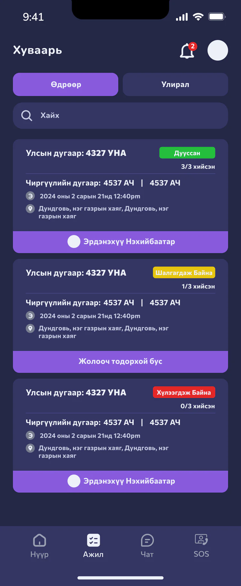
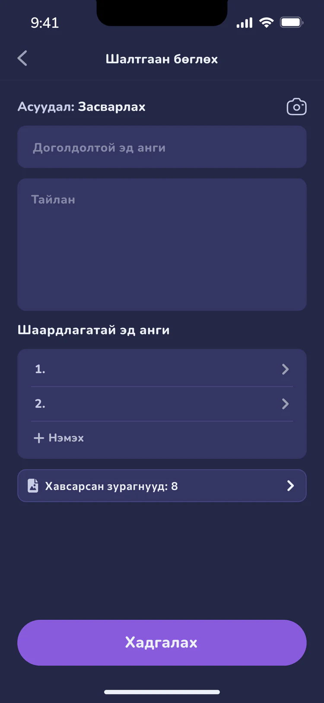
Техникийн тодорхойлолт
Улсын болон чиргүүлийн дугаар, үйлдвэрлэсэн он зэрэг машины мэдээлэл нэг дэлгэцэд.
Safety engineer
ХАБ-ын инженер жолоочид явуулах зааварчилгааг хоёр хэсгээр бэлддэг: гүйцэтгэх ажил, хариуцлага; аюулгүй ажиллагааны заавар. Мөр бүр дугаартай, шинэ мөр нэмж болно. Илгээхийн өмнө «Хянах» дэлгэц бүгдийг нэг дор харуулж, ХАБ-ын нэмэлт зөвлөмж бичих зай гаргана.
Зааварчилгаа жолоочийн чатад «Аюулгүй байдлын зөвлөмж» карт болж очно. Жолооч танилцаад гарын үсэг зурахад тэр гарын үсэг ХАБ-ын инженерт ирж, тэр баталгаажуулна. Механикийн зөвшөөрөл ч чатад карт болж ирнэ, хуваарь дээр машин бүрийн хэдэн алхам хийгдсэн нь (2/3, 3/3) харагдана.
Хариуцлага ба заавар
Зааварчилгааны хоёр хэсэг, хоёр таб: гүйцэтгэх ажил, хариуцлага; аюулгүй ажиллагааны заавар. Мөр бүр дугаартай, шинэ мөр нэмж болно.
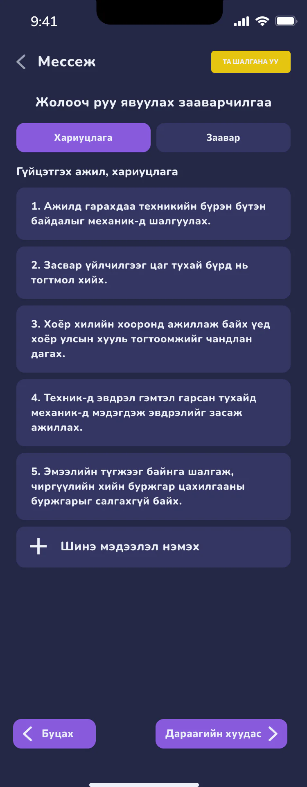

Илгээхийн өмнө хянах
Хоёр хэсэг нэг дор, доор нь ХАБ-ын нэмэлт зөвлөмж бичих талбар.
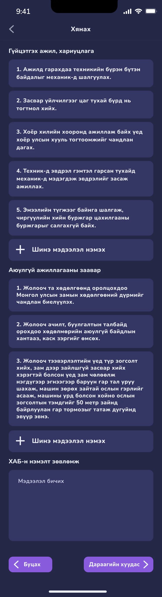
Жолооч руу, буцаад ХАБ руу
Зааварчилгаа чатад «Аюулгүй байдлын зөвлөмж» карт болж очно. Жолооч гарын үсэг зурахад ХАБ-ын инженер түүнийг баталгаажуулна.
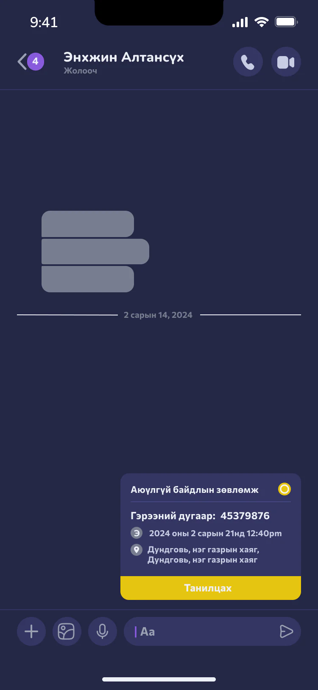
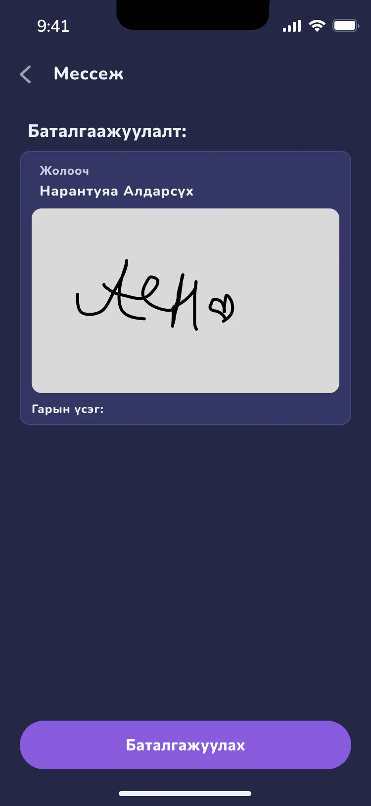
Зөвшөөрлийг хянах
Механикийн зөвшөөрөл чатад карт болж ирнэ. Хуваарь дээр машин бүрийн хэдэн алхам хийгдсэн нь (2/3, 3/3) харагдана.
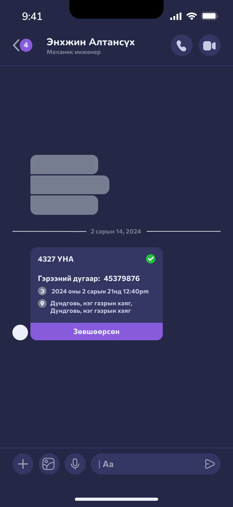
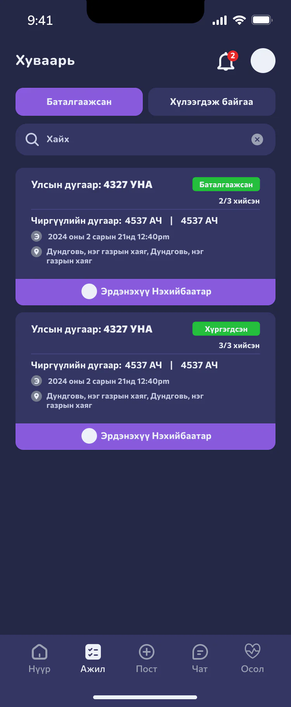
Мессежүүд
Бүх чат нэг жагсаалтад, хайлт ба мэдэгдлийн тоотой.
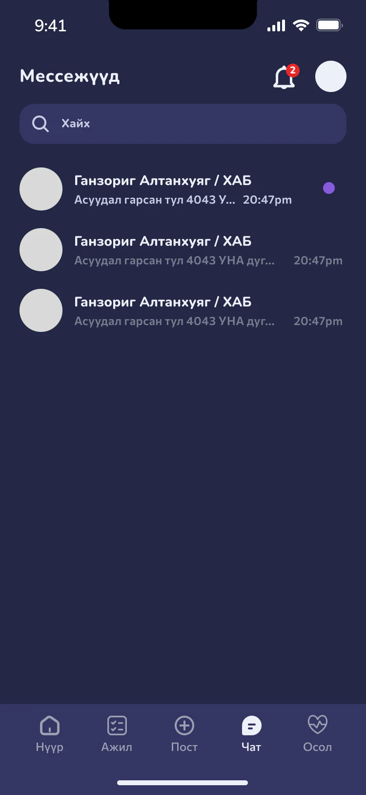
Driver
Жолооч ХАБ-аас ирсэн зааварчилгааг чеклист, зураг, видеогоор нь танилцаад зөвшөөрсөн гарын үсгээ зурна. Зааварчилгаанаас хоцорсон хүн утаснаасаа өөрөө авч болно — урьд нь энэ нь дахин цуглуулах шалтгаан байсан.
Гарын үсэг нь ХАБ-ын инженер болон тээвэр зохицуулагч хоёр луу зэрэг очно. Осол гарсан тохиолдолд хэн, хэзээ зааварчилгаа авсан нь хайх зүйлгүй бэлэн болно.
Зааварчилгаатай танилцах
Хариуцлага, заавар хоёр таб. Мөр бүрийг уншаад тэмдэглэнэ; тэмдэглээгүй мөр улаанаар ялгарна.
Гарын үсэг, дараа нь хариу
Танилцсаны дараа гарын үсгээ зурж баталгаажуулна. Хариу нь чатад карт болж ирнэ — татгалзсан эсвэл танилцсан.
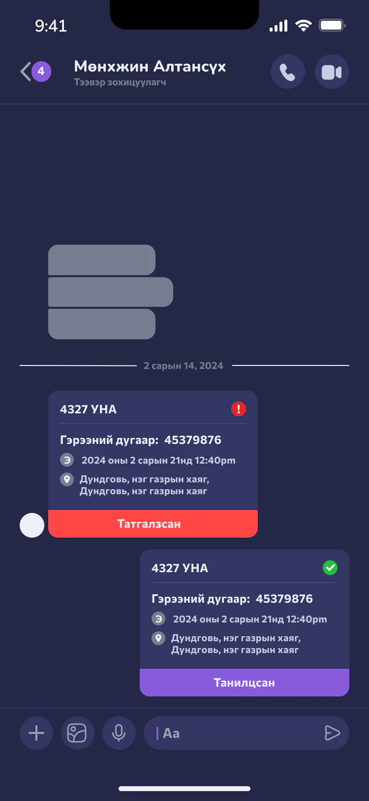
Coordinator
Тээвэр зохицуулагч ХАБ болон механик инженерээс зөвшөөрсөн гарын үсгийг хүлээж авсны дараа л жолоочид «тэр байрлалд оч» гэсэн мэдэгдэл илгээнэ. Түүнд хүргэлтийн мэдээллийг засах бүрэн эрх бий.
Амжилттай замын хажуугаар амжилтгүй төлвүүдийг бас зурсан: хүсэлт татгалзсан, үзлэг унасан, мэдэгдэл хүрээгүй. Эдгээрийг хойш нь нэмэхгүй, эхнээс нь оруулсан.
Мэдэгдэл ба хүсэлт
Мэдээлэл засах хүсэлт, механикаас ирсэн асуудал мэдэгдэл болж ирнэ. Хүсэлтийг зөвшөөрөх эсвэл татгалзана.
Асуудал гарсан үед
Механикийн тайлан — гэмтэл, зураг, солих эд анги — ба асуудал гарсан төлөв шалтгаан, гарын үсэгтэйгээ.
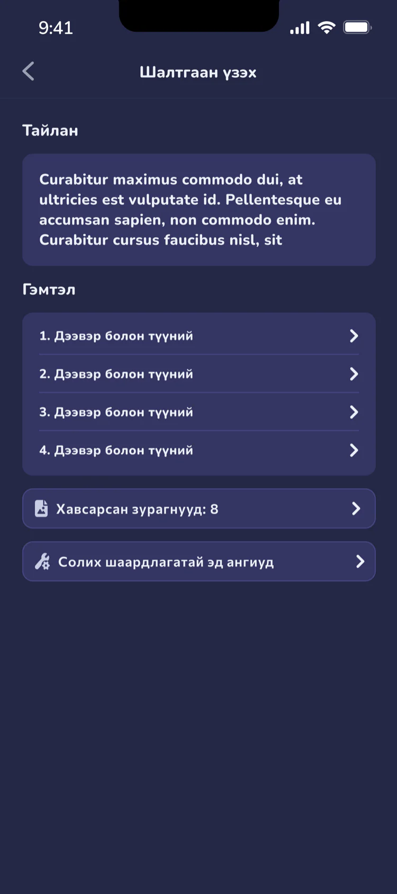
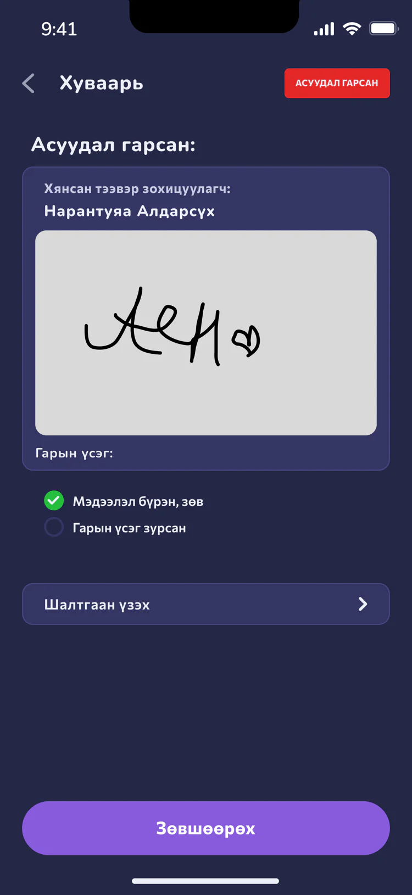
Хуваарь
Машин бүр төлөвтэйгээ: асуудал гарсан, ХАБ-д хүлээгдэж буй гэх мэт.
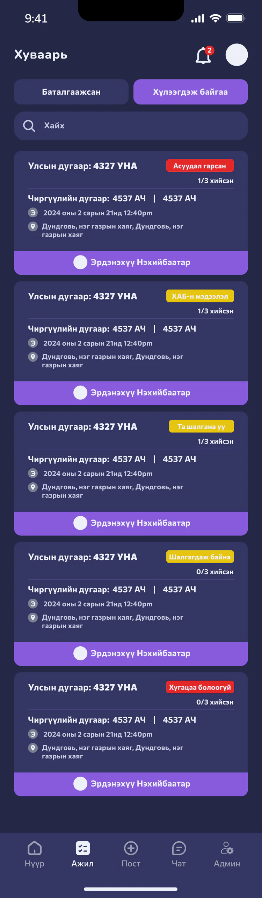